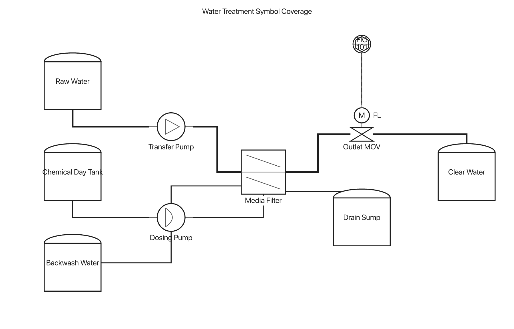

General liquid pump
A neutral liquid-pump glyph for cases where the operating principle is unspecified.
equip P-101 : pump_general
SchemaTex 1.0.14 · P&ID parts bench
renderEquip() function. Port dots and callout labels are the only preview overlay.The additions fill two catalog gaps without changing the established centrifugal-pump meaning.
A neutral liquid-pump glyph for cases where the operating principle is unspecified.
equip P-101 : pump_general
The existing volute-style pump remains distinct and keeps its raised discharge anchor.
equip P-102 : pump_centrifugal
The membrane profile makes dosing and metering duty recognizable without reading the tag.
equip P-201 : pump_diaphragm
One stable valve-body envelope composes four actuator glyphs. The first three cards also expose all supported fail-position labels.
Pneumatic spring-diaphragm operator with fail-closed behavior.
equip FV-101 : valve_control [actuator: "diaphragm", fail: "FC"]
Linear piston operator with fail-open behavior.
equip PV-201 : valve_control [actuator: "piston", fail: "FO"]
Circular M operator for an electrically driven valve that fails in last position.
equip XV-301 : valve_control [actuator: "motor", fail: "FL"]
Boxed S operator for discrete electric actuation.
equip SV-401 : valve_control [actuator: "solenoid"]
Named anchors are now visible engineering structure. Invalid explicit ports produce lint instead of borrowing a plausible main connection.
The filter owns one geometry record; both routing and lint read the same map.
.in / .outTwo main-process anchors.topChemical injection or top service.backwashDedicated side service anchor.drainDedicated bottom outletThe isolated parts still have to survive routing, labels, instruments, and mixed process services. This is the current branch rendering of the water-treatment fixture.
